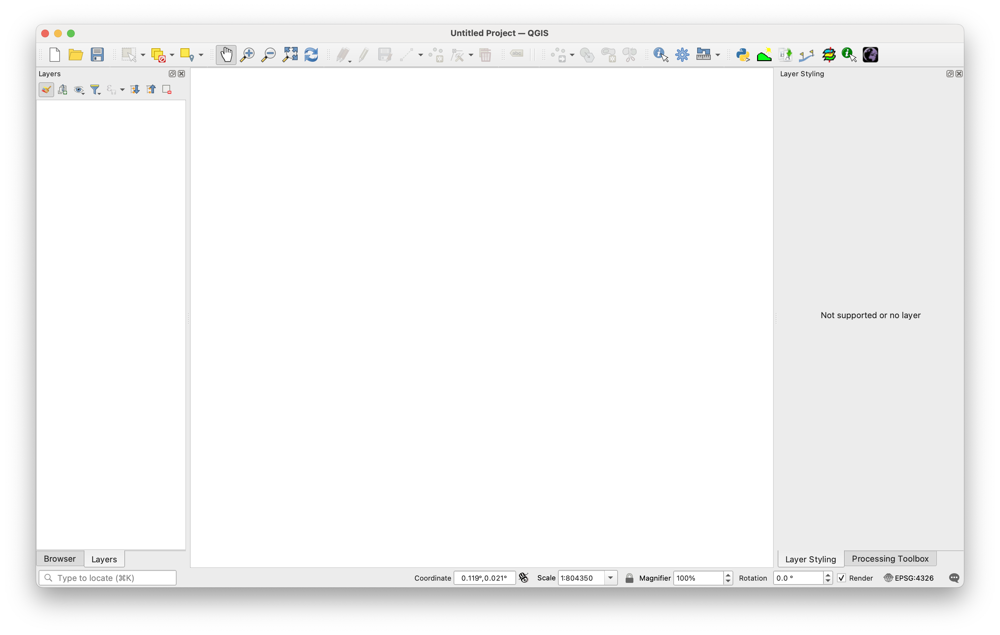

Cyn i chi ddechrau
Y canllaw hwn yw eich cydymaith i’r ymarferion ymarferol Cyflwyniad i GIS. Bydd yn eich helpu i feithrin sgiliau ymarferol, osgoi peryglon cyffredin, a gwneud y gorau o’ch amser yn y labordy cyfrifiadurol. Gallwch weithio ar eich cyflymder eich hun, ond mae’n bwysig mynychu pob sesiwn ymarferol gyfrifiadurol a drefnwyd. Y sesiynau hyn yw eich cyfle i rannu eich cynnydd, gofyn cwestiynau, ac egluro camddealltwriaethau mewn amgylchedd dysgu cefnogol, wedi’i droi (Dikilitas a/ac Fructuoso 2023).
Drwy ddilyn y cyngor yn y bennod hon, byddwch wedi’ch paratoi’n well i gwblhau’r ymarferion yn effeithlon ac yn hyderus.
Mynediad i QGIS
Darperir meddalwedd a data drwy’r rhwydwaith cyfrifiadurol Mynediad Agored, y gallwch ei gyrchu’n bersonol yn un o’r labordai o amgylch y campws, neu drwy benbwrdd rhithwir ar unrhyw gyfrifiadur sydd â Phrotocol Penbwrdd o Bell wedi’i osod (safonol ar gyfer y rhan fwyaf o gyfrifiaduron Windows, ar gael ar gyfer y rhan fwyaf o gyfrifiaduron Mac a Linux). Gweler mewn man arall am gyfarwyddiadau ar sut i gael mynediad i’r penbwrdd rhithwir, a fydd angen Dilysu Aml-Ffactor drwy Ap Ffôn Clyfar.
Cyfrifiadur Prifysgol
Darperir cymwysiadau drwy’r ffolder ZenWorks ar eich bwrdd gwaith. Fe welwch QGIS (ac ArcGIS) yn yr ardal Gwyddoniaeth > Daearyddiaeth. Rydym yn defnyddio’r fersiwn sefydlog ddiweddaraf o QGIS.
Cyfrifiadur Personol
Mae QGIS yn feddalwedd ffynhonnell agored am ddim sydd ar gael ar gyfer Windows, Mac, a Linux. Mae hyn yn golygu nad ydych chi wedi’ch cyfyngu i ddefnyddio cyfrifiaduron Prifysgol - gallwch chi ei osod ar eich peiriant eich hun a gweithio lle bynnag a phryd bynnag y dymunwch.
Lawrlwythwch a gosodwch QGIS o’r wefan swyddogol yma.
Dilynwch y dolenni i’r Gosodwr Annibynnol QGIS ar gyfer eich system weithredu.
Os ydych chi eisiau’r nodweddion mwyaf cyfredol, dewiswch y Rhyddhad Diweddaraf. Os yw’n well gennych i’ch gosodiad gyd-fynd â’r fersiwn sydd wedi’i gosod ar gyfrifiaduron y Brifysgol, dewiswch y Rhyddhad Hirdymor (LTR).
Penbwrdd o Bell
Mae’r Bwrdd Gwaith o Bell yn caniatáu ichi fewngofnodi i un o gyfrifiaduron Mynediad Agored y Brifysgol o’ch cartref. Ar ôl cysylltu, bydd gennych yr un mynediad at feddalwedd a data ag y byddech pe baech ar y campws yn gorfforol — gan gynnwys gyriant Cyffredin y Myfyrwyr (L:/Coleg y Gwyddorau/Daearyddiaeth/GEG276).
Mae nifer y cysylltiadau Penbwrdd o Bell ar yr un pryd wedi’i gapio, felly efallai na fyddwch bob amser yn gallu mewngofnodi.
Mae defnyddio’r Penbwrdd o Bell yn gofyn am:
- Dilysu Aml-Ffactor (MFA); ail gam diogelwch yn ogystal â’ch cyfrinair.
- Yr ap Microsoft Authenticator wedi’i osod ar ffôn clyfar.
- Mynediad VPN (gweler canllawiau TG y Brifysgol).
I sefydlu MFA ar gyfer Penbwrdd o Bell:
- Lawrlwythwch yr Ap Dilysu Microsoft o’ch siop apiau.
- Ewch i’r hwb MyUni. a mewngofnodi.
- Cliciwch Fy Apiau.
- Dewiswch Diogelu fy Nghyfrif (gwaelod ar y dde).
- Dewiswch Ychwanegu dull (uwchben eich rhif ffôn).
- Gosodwch Ap Dilysu fel eich dull dilysu diofyn.
- Rhowch y cod a anfonwyd atoch drwy neges destun.
- Cliciwch Nesaf i barhau.
- Sganiwch y cod QR a ddangosir ar y sgrin gyda’ch Ap Dilysu.
Os nad yw’r gosodiad yn gweithio’r tro cyntaf, ailadroddwch y camau’n ofalus i gadarnhau bod pob cam wedi’i gwblhau. Os ydych chi’n dal i gael problemau, dilynwch y tiwtorialau ar-lein yn Remote PC Access Service a Account Enquiry and MFA Setup, gofynnwch am gymorth gan y tîm TG gan ddefnyddio’r Wasanaeth Ganolfan, neu cysylltwch â mi am arweiniad.
Y data
Mae’r holl setiau data sydd eu hangen arnoch ar gyfer y sesiynau ymarferol a’r prosiect terfynol wedi’u darparu ar y gyriant L:Common Student:
L:/Coleg Gwyddoniaeth/Daearyddiaeth/GEG276
Os yw’n well gennych weithio ar eich cyfrifiadur eich hun, bydd angen i chi gopïo’r setiau data hyn i’ch cyfrifiadur personol. Gallwch wneud hyn mewn un o ddwy ffordd:
Trosglwyddo o’r gyriant L: Defnyddiwch ddyfais storio USB neu wasanaeth storio cwmwl fel Microsoft OneDrive neu Google Drive i gopïo’r ffeiliau perthnasol o’r gyriant L.
Lawrlwytho o Google Drive: Copïwch y ffeiliau perthnasol gan ddefnyddio’r ddolen yma.
Er mwyn arbed amser a lle, dim ond lawrlwythwch neu gopïwch y data sydd ei angen arnoch ar gyfer pob ymarfer yn hytrach na throsglwyddo popeth ar unwaith.
Storio data
Mae Prifysgol Abertawe yn darparu storfa ddiogel drwy OneDrive a gyriannau rhwydwaith. Mae’r rhain yn ymddangos yr un fath ni waeth pa gyfrifiadur Prifysgol rydych chi’n mewngofnodi iddo, a gallwch hefyd gael mynediad at OneDrive o’ch dyfeisiau eich hun. Mae gen i ddau awgrym allweddol i chi:
Cadwch eich gwaith i OneDrive bob amser. Mae hyn yn ei gadw’n ddiogel rhag colli’n ddamweiniol ac yn hygyrch lle bynnag yr ydych. Osgowch storio gwaith cwrs ar y gyriant C: lleol — dim ond ar y peiriant hwnnw y mae ffeiliau a gedwir yno ar gael a gallant gael eu dileu’n awtomatig dros nos.
Byddwch yn drefnus. Crëwch strwythur ffolderi clir ar gyfer eich gwaith GIS ac enwch ffeiliau’n rhesymegol. Gall prosiectau GIS gynhyrchu cannoedd o ffeiliau; bydd aros yn daclus yn arbed amser a rhwystredigaeth i chi yn ddiweddarach.
Gwyliwch eich lle storio
Os bydd eich lle disg yn llawn, gall QGIS a meddalwedd arall chwalu. I unioni hyn:
Gwiriwch y lle gwag yn y panel hysbysiadau bwrdd gwaith neu drwy glicio ar y dde ar y gyriant yn Windows Explorer a dewis Priodweddau.
Dileu ffeiliau dros dro neu ddiangen i ryddhau lle.
Os yw problemau’n parhau — er enghraifft, os na allwch fewngofnodi, cael mynediad at feddalwedd, neu gadw ffeiliau — gwnewch gais i’r Ganolfan Wasanaeth yma.
Dewisiadau meddalwedd GIS
Ar hyn o bryd mae dau gymhwysiad meddalwedd yn dominyddu’r farchnad GIS, pob un â manteision ac anfanteision:
- ESRI ArcGIS: Mae ArcGIS yn gyfres o raglenni, gan gynnwys ArcMap (GIS safonol) ac ArcScene (GIS 3D). Mae wedi bod yn arweinydd y diwydiant ers degawdau ac fe’i defnyddir yn helaeth gan weithwyr proffesiynol.
Manteision: Wedi’i sefydlu’n dda, yn llawn nodweddion, ac wedi’i gefnogi gan ddogfennaeth helaeth ar-lein.
Anfanteision: Gall deimlo’n anghredadwy, yn dueddol o gael chwilod achlysurol, ac addysg allanol ddrud.
- QGIS (GIS Cwantwm): Mae QGIS yn gymhwysiad ffynhonnell agored sengl sydd wedi tyfu’n gyflym o ran poblogrwydd, yn enwedig yn y sector cyhoeddus.
Manteision: Am ddim i’w osod, ffynhonnell agored, ac yn gynyddol gystadleuol gydag ArcGIS.
Anfanteision: Mae’n dal i fod yn brin o rai swyddogaethau uwch ac efallai ei fod yn llai cyffredin mewn rhai marchnadoedd swyddi.
Fel Adran Ddaearyddiaeth, rydym wedi dewis eich dysgu QGIS. Pam? Oherwydd ei fod yn cyfuno pŵer a hyblygrwydd GIS proffesiynol â hygyrchedd a rhyddid meddalwedd ffynhonnell agored.
Mae QGIS yn rhad ac am ddim i’w osod ar eich cyfrifiadur eich hun, sy’n golygu y gallwch ymarfer ac arbrofi unrhyw le, unrhyw bryd, heb ddibynnu ar labordai campws na thrwyddedau drud. Mae ganddo ryngwyneb glân, reddfol y mae llawer o ddechreuwyr yn ei chael hi’n haws i’w ddysgu nag ArcGIS, ond mae’n dal i gynnig offer uwch a ddefnyddir gan weithwyr proffesiynol ledled y byd.
Y tu hwnt i’r ystafell ddosbarth, mae QGIS yn ennill tir yn gyflym yn y sectorau llywodraeth, ymgynghoriaeth ac ymchwil, yn enwedig lle mae cyllidebau’n dynn a rhannu data yn bwysig (Graser et al. 2025). Mae ei natur ffynhonnell agored yn golygu bod nodweddion ac ategion newydd yn cael eu hychwanegu gan gymuned fyd-eang o arbenigwyr GIS - felly rydych chi’n dysgu gyda llwyfan sy’n esblygu ar flaen y gad.
Mae ei osod nawr yn rhoi set sgiliau sy’n barod ar gyfer gyrfa i chi, y gallu i gydweithio’n rhyngwladol heb rwystrau trwydded, a’r hyder y gallwch chi bob amser gael mynediad at becyn cymorth GIS pwerus ymhell ar ôl graddio. Gallwch ei lawrlwytho yma.
Datblygu eich sgiliau cyfrifiadurol
Y ffordd fwyaf effeithiol o ddysgu GIS yw ei ddefnyddio’n weithredol. Mae’r ymarferion ymarferol wedi’u cynllunio i’ch tywys trwy’r swyddogaethau mwyaf cyffredin yn QGIS, gan eich helpu i feithrin sgiliau a chreu canlyniadau y gallwch eu defnyddio yn eich gwaith cwrs, prosiectau neu draethawd hir.
Dyma fy awgrymiadau ar gyfer dysgu QGIS:
Disgwyliwch wneud camgymeriadau a bod angen ailadrodd camau. Bydd yr ailadrodd hwn yn eich helpu i gofio prosesau. Gall QGIS hongian neu chwalu o bryd i’w gilydd. Dysgwch sut i adfer yn gyflym trwy arbed yn aml a chadw golwg ar eich cynnydd.
Arbedwch eich gwaith yn rheolaidd a gwyddoch yn union ble mae wedi’i storio. Cadwch strwythur ffolderi taclus a rhesymegol, a gwnewch gopïau o waith sydd wedi cymryd amser hir i’w gyflawni. Mae GIS yn creu llawer o ffeiliau, a bydd trefniadaeth dda yn arbed amser ac yn atal colli data.
Archwiliwch y feddalwedd yn hytrach na dilyn cyfarwyddiadau yn unig. Byddwch yn feiddgar a chliciwch drwy ddewislenni, rhowch gynnig ar offer, ac arbrofwch. Byddwch yn dysgu’n gyflymach drwy ddarganfod nodweddion eich hun. Bydd yr ymarferion ymarferol yn disgwyl i chi ddarganfod rhai pethau drosoch eich hun.
Gofynnwch am gymorth pan fo angen. Mae cymorth ar gael trwy fideos demos Canvas, cyd-ddisgyblion, arddangoswyr, ac adnoddau ar-lein (gweler Cael cymorth). Rhaid cwblhau gwaith cwrs yn unigol, ond anogir cydweithio ar ddatrys problemau.
Byddwch chi’n meistroli QGIS mewn dim o dro.
Hanfodion QGIS
Ffenestri
Mae gan QGIS ddau brif fan gwaith: y Canfas Map a’r Cynllun Argraffu. Gallwch hefyd agor Tablau Priodoleddau drwy’r GUI i weld a golygu data sy’n gysylltiedig â nodweddion map. Mae angen i chi ddod yn gyfarwydd ag agor a rhyngweithio â’r prif elfennau rhaglen hyn.

Haenau
Mae haen yn set ddata o un math — pwyntiau, llinellau, polygonau, neu raster — sy’n aml yn cael ei storio gyda nifer o ffeiliau cysylltiedig. Mae haenau’n cael eu cyfuno i greu mapiau neu’n cael eu prosesu i gynhyrchu haenau newydd. Mae trefn haenau yn bwysig oherwydd gall haenau uwch guddio rhai is.
Prosiectau
Mae ffeil prosiect QGIS (.qgz) yn storio cyfeiriadau at eich data a’ch gosodiadau arddangos, nid y data ei hun. Rwy’n argymell dechrau prosiect newydd pan fydd ffocws daearyddol eich gwaith yn newid neu pan fyddwch chi’n symud ymlaen i aseiniad newydd. Felly mae prosiectau’n cynnwys dolenni rhithwir i’r holl ffeiliau haen ddata rydych chi wedi’u llwytho, yn ogystal â chyfarwyddiadau i’r feddalwedd ynghylch sut y dylent ymddangos. Mae hyn yn arwain at dri ystyriaeth bwysig:
Byddai copïo neu drosglwyddo prosiect QGIS o un cyfrifiadur i’r llall yn gofyn am gopïo ffeil y prosiect a yr holl haenau data cysylltiedig mewn ffordd sy’n cynnal y llwybrau ffeiliau cymharol. Mae hyn weithiau’n anodd ei gyflawni. Os byddwch chi’n newid amgylchedd eich cyfrifiadur (e.e. o system y Brifysgol i’ch gliniadur), mae’n aml yn haws copïo’r holl ffeiliau haen a dechrau prosiect newydd o’r dechrau — agor a threfnu pob un o’r ffeiliau haen eto.
Bydd symud neu ailenwi haenau data (neu’r ffolderi sy’n eu cynnwys) yn golygu na all prosiect QGIS ddod o hyd iddynt mwyach ac felly bydd yn methu â’u hagor. Mae’n bosibl adfer o’r sefyllfa hon - ond gwell ei hosgoi. Bydd pob ffeil ddata ar y gyriant L: yn aros lle maen nhw. Gwnewch yn siŵr bod pob ffeil ddata rydych chi’n ei rhoi ar eich OneDrive (neu ffon gof neu ddisg gliniadur) wedi’i henwi’n synhwyrol ac wedi’i gosod mewn strwythur ffolderi priodol fel nad ydych chi’n eu symud, eu hailenwi na’u dileu ar ddamwain. Mae’n debyg y byddwch chi’n cynhyrchu cannoedd lawer o ffeiliau data trwy eu lawrlwytho (e.e. o’r rhyngrwyd), eu copïo (e.e. o’r gyriant L:), neu greu haenau wrth brosesu GIS.
Pan fyddwch chi’n creu haen GIS newydd, er enghraifft drwy gyflawni swyddogaeth geobrosesu ar haen sy’n bodoli eisoes, fel arfer byddwch chi’n cael y dewis o greu haen dros dro neu gadw’r haen newydd ar ddisg. Mae creu haenau dros dro yn ffordd gyflym o archwilio a chadarnhau mai’r allbwn yw’r hyn yr oeddech chi ei eisiau. Fodd bynnag, ni fydd yr haenau hyn ar gael mwyach pan fyddwch chi’n cau’r prosiect oni bai eich bod chi’n eu gwneud yn barhaol. Rwy’n argymell defnyddio haenau dros dro ar gyfer arbrofi, a dewis enw parhaol, lleoliad, a math data ar gyfer unrhyw haen y bydd ei hangen arnoch chi yn ddiweddarach.
Yn gyffredinol, rhowch flaenoriaeth i gadw eich ffeiliau haen ddata — maent fel arfer yn fwy gwerthfawr na ffeil y prosiect ei hun.
Ategion
Mae’r gosodiad sylfaenol o QGIS yn ddigonol at y rhan fwyaf o ddibenion, fodd bynnag mae’r ymarferion ymarferol GIS yma’n mynd ychydig y tu hwnt i’r swyddogaeth sylfaenol hon. Mae llawer o ychwanegiadau QGIS wedi’u datblygu trwy ddatblygu meddalwedd Ffynhonnell Agored ac wedi’u gwneud ar gael am ddim trwy’r rhyngwyneb Ategion:
Prif Ddewislen > Ategynnau > Rheoli a gosod Ategynnau
Mae ategion wedi’u gosod yn rhan y defnyddiwr o storfa’r cyfrifiadur felly nid oes angen unrhyw freintiau gweinyddwr arnynt. Fe’ch anogir i archwilio’r holl ategion sydd ar gael. Bydd yr ymarferion canlynol yn egluro pryd mae angen gosod rhai ategion (ar system y Brifysgol a/neu ar eich cyfrifiadur eich hun).
Ystyriaethau allweddol
Argraffu mapiau
Yn aml, mae lliwiau printiedig yn edrych yn wahanol i’r lliwiau a welwch ar y sgrin. Os oes angen i chi argraffu map — er enghraifft, i’w gynnwys mewn traethawd neu draethawd hir — gwiriwch bob amser fod y lliwiau a ddewisoch yn gweithio’n dda ar bapur. Y ffordd orau yw argraffu copi prawf, ei archwilio’n ofalus i wneud yn siŵr bod holl elfennau’r map yn glir ac yn wahaniaethadwy, ac addasu’r lliwiau os oes angen. Efallai y bydd angen i chi ailadrodd y broses hon ychydig o weithiau i gael y canlyniad rydych chi ei eisiau. Yn ffodus, cyflwynir yr holl waith cwrs GEG276 (a’r rhan fwyaf o aseiniadau mewn modiwlau eraill) ar-lein, felly anaml y mae argraffu yn hanfodol.
Fel arfer, ni all argraffwyr argraffu’n syth at ymylon y papur chwaith. Os ydych chi’n bwriadu argraffu’n uniongyrchol o QGIS, gadewch o leiaf 0.5 cm o ymyl o amgylch eich map i osgoi torri manylion pwysig i ffwrdd.
Defnyddio tryloywder
Gall tryloywder helpu i gyfuno sawl haen heb golli manylion pwysig, ond gall hefyd wneud lliwiau map yn anghyson â’r allwedd. Osgowch dryloywder rhannol mewn mapiau terfynol ar gyfer gwaith cwrs oni bai ei fod yn ychwanegu ystyr hanfodol. Dylai lliwiau yn yr allwedd gyd-fynd yn union â’r rhai yn y map.
Mathau o ffeiliau GIS
Mae sawl math o ffeiliau GIS. Ar gyfer data raster, rwy’n argymell eu cadw fel GeoTIFF (.tif neu .tiff). Ar gyfer data fector (pwyntiau, llinellau neu bolygonau), rwy’n argymell eu cadw fel GeoPackage (.gpkg). Mae’n debyg y byddwch yn dod ar draws Shapefiles fel fformat ar gyfer storio data fector. Mae’r fformat hwn wedi bod o gwmpas ers y 90au ac mae’n parhau i gael ei ddefnyddio’n eang heddiw. Rwy’n argymell defnyddio GeoPackages yn lle hynny am ddau brif reswm:
Mae ffeil siâp yn storio data fel nifer o ffeiliau (rhwng 3 a 16!) sydd â’r un enw ond estyniadau gwahanol (
.shp,.shx,.dbf…). Os ydych chi’n ailenwi neu’n rhannu ffeil siâp, mae angen i chi wneud yn siŵr eich bod chi’n ailenwi pob ffeil ac yn rhannu pob ffeil er mwyn i’r fersiwn newydd weithio’n gywir.Dim ond pwynt, llinell, neu bolygon y gall ffeil siâp fod. Gall GeoPackage storio sawl math o ddata.
ffynonellau data GIS
Defnyddiwch ffynonellau dibynadwy ar gyfer data GIS. Yn y DU, mae Arolwg Ordnans yn darparu setiau data awdurdodol, ac mae rhai ohonynt am ddim trwy OS OpenData{targ et=“_blank”}. Fel myfyriwr Prifysgol Abertawe, gallwch hefyd gael mynediad at ddata OS premiwm trwy EDINA Digimap.
Mae prosiectau data agored fel OpenStreetMap yn cynnig dewisiadau amgen am ddim, sy’n cael eu diweddaru’n barhaus, a ddefnyddir yn helaeth mewn ymchwil a phrosiectau cymunedol. Mae’r data hwn yn gwella’n barhaus o ran ansawdd a chwmpas a gall unrhyw un gymryd rhan yn y prosiect. Rwyf wedi dewis defnyddio ffynonellau Data Agored yn unig ar gyfer yr ymarferion ymarferol a’r prosiect fel nad oes unrhyw gyfyngiadau ar rannu data.
Addasu’r Cynfas Map (uwch)
Os ydych chi fel fi ac yn hoffi rhyngwyneb minimalistaidd a chlir i weithio ag ef, gallwch addasu Cynfas Map QGIS i raddau helaeth. Os ydych chi am wneud hyn, rwy’n argymell eich bod chi’n archwilio Dogfennaeth QGIS yn eich amser eich hun yma. Ond byddwch yn ofalus — efallai y byddwch chi’n cael gwared ar offer neu ddewislenni penodol sy’n hanfodol ar gyfer cwblhau’r cwrs hwn. Felly rwy’n argymell eich bod chi’n arbrofi gydag addasu ar ôl i chi gwblhau’r cwrs yn unig.

.Cael cymorth
Am wybodaeth gyffredinol, cyfeiriwch at wefan Canvas GEG276. Bydd yr holl ddogfennau sy’n gysylltiedig â’r cwrs yn cael eu postio yno, ac efallai y byddaf yn defnyddio’r Bwrdd Trafod Canvas i rannu gwybodaeth ychwanegol. Os na chewch yr hyn rydych chi’n chwilio amdano, mae croeso i chi anfon e-bost ataf. Os byddaf yn derbyn ymholiad - y gallai’r ateb iddo fod yn ddefnyddiol i bob myfyriwr, byddaf yn postio ateb trwy e-bost neu’r Bwrdd Trafod.
Yn aml, gellir datrys problemau penodol i feddalwedd drwy chwilio ar Google a gofyn i AI. Gall teipio QGIS a disgrifiad o’ch problem arwain at ateb yn aml. Mae safleoedd a arweinir gan y gymuned fel StackExchange yn arbennig o ddefnyddiol ar gyfer cael cymorth. Mae llawlyfr QGIS, Fforwm QGIS, a phrif wefan QGIS i gyd yn ffynonellau gwerthfawr hefyd.